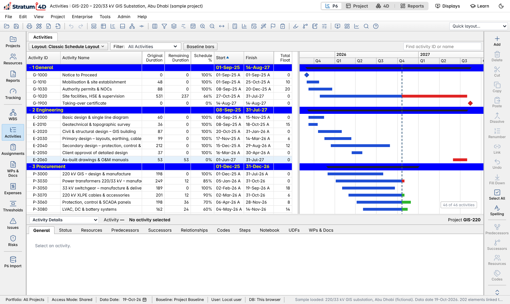
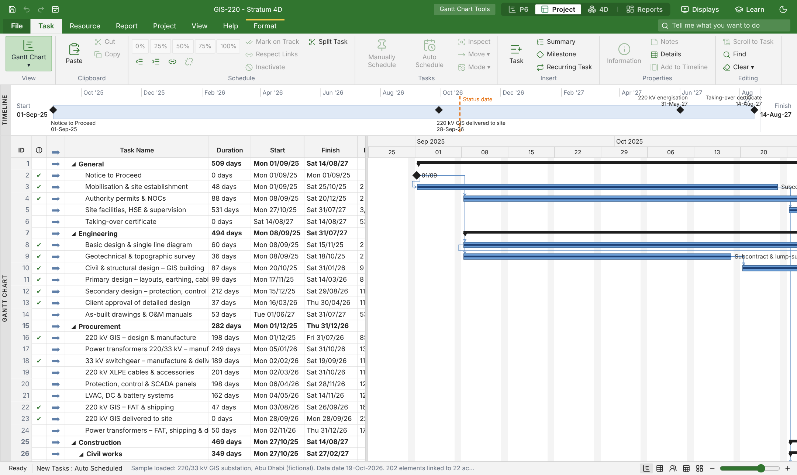
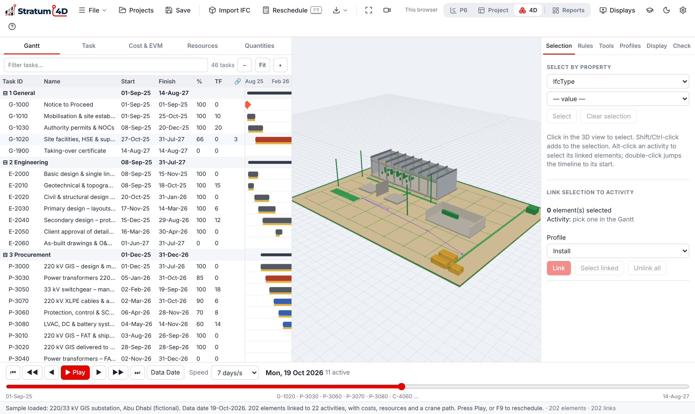
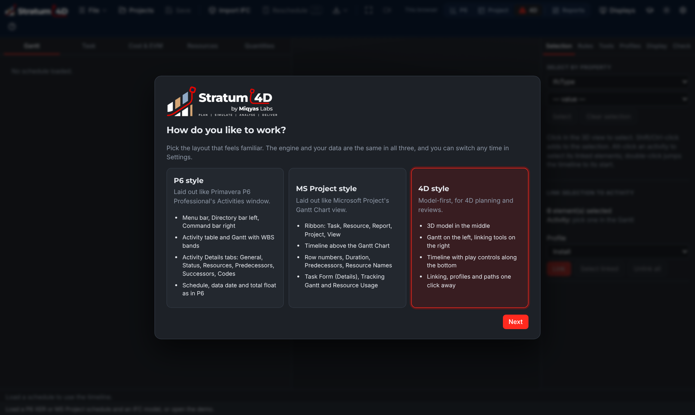
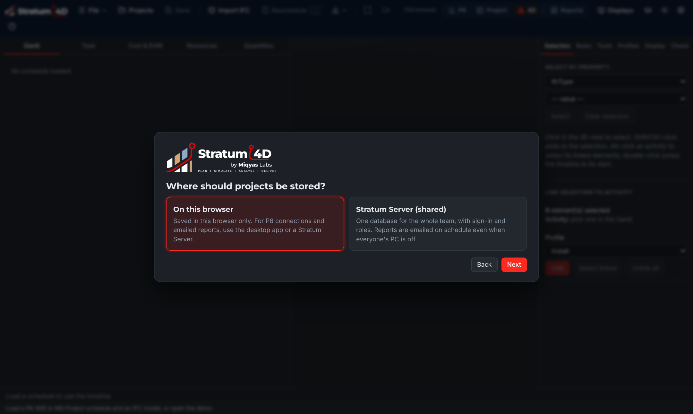
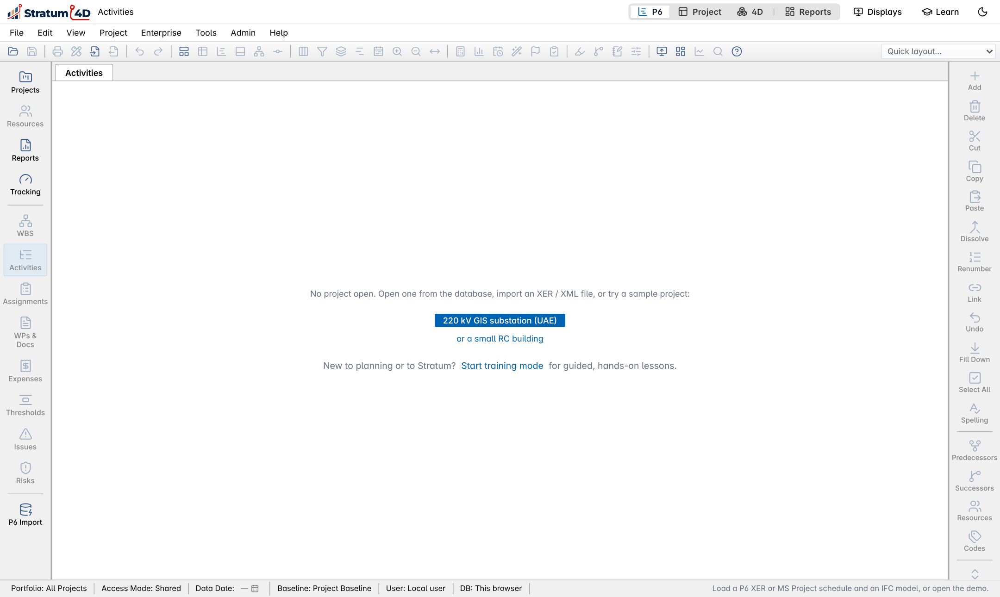
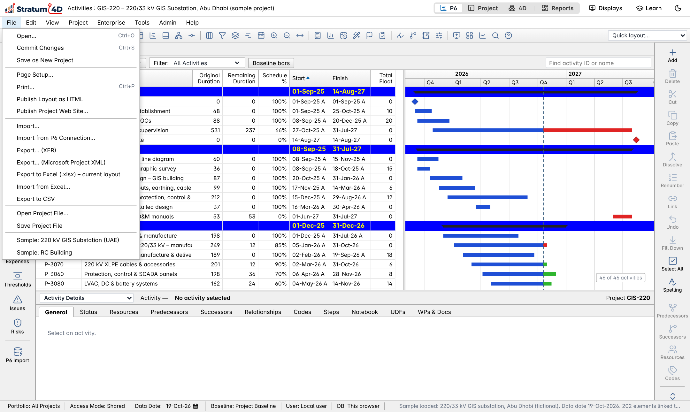
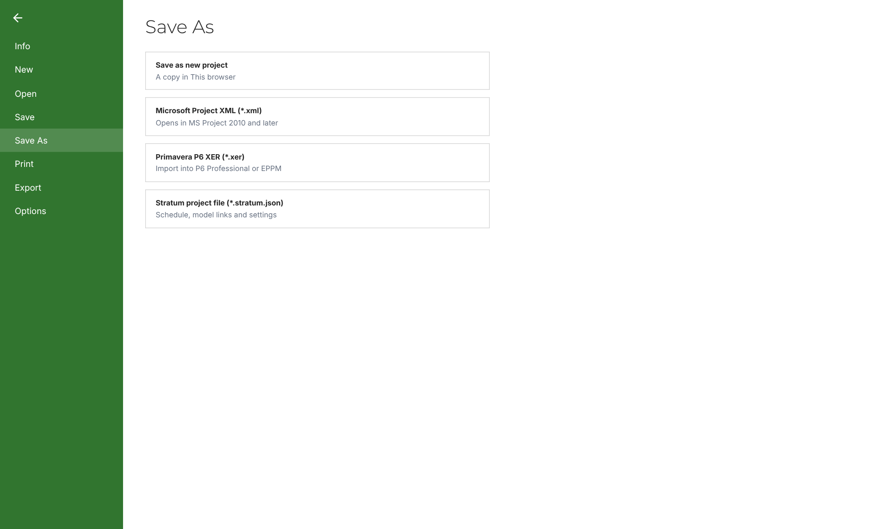

Release 0.10.1 · Planning, 4D simulation, dashboards and reports
Written in ASD-STE100 Simplified Technical English. Stratum 4D by Miqyas Labs · developed by Junaid Quamar · linkedin.com/in/junaidquamar October 2026. The sample projects in this manual are fictional.
Contents
1Introduction
2Installation
3First start
4Projects and files
1Introduction
This chapter tells you what Stratum 4D does, which layouts it has, and how to use this manual.
What Stratum 4D is
Stratum 4D is a planning and 4D simulation tool for construction projects. It reads a schedule from Primavera P6 or Microsoft Project. It can also read a 3D building model in the IFC format.
You link the model elements to the activities of the schedule. Stratum then shows the construction sequence in 3D, day by day. You can calculate the schedule, record progress, compare against a baseline and make reports.
Figure 1-1. The six stages of work in Stratum 4D.
The three layouts
Stratum 4D has three layouts. All three layouts use the same calculation engine and the same project data. When you change the layout, the open project stays open.
The P6 layout looks and works like Primavera P6 Professional.
The Project layout looks and works like Microsoft Project.
The 4D layout shows the 3D model, the Gantt chart and the playback timeline together.
Figure 1-2. The three layouts and what each layout is for.
To change the layout
On the top bar, click P6, Project or 4D.The new layout opens with the same project.
Alternatively, push Ctrl+Alt+1, 2 or 3.

Figure 1-3. The P6 layout with the 220 kV GIS substation sample project.

Figure 1-4. The Project layout (Microsoft Project style) with the same project.

Figure 1-5. The 4D layout: Gantt chart on the left, 3D model in the middle, link tools on the right and the timeline at the bottom.
The sample projects
Stratum 4D has two sample projects. You can use them to learn the software without your own files. The two sample projects are fictional.
Sample project
Contents
220 kV GIS substation (UAE)
46 activities on a UAE 6-day calendar, costs in AED, resources, a baseline and a 3D model with 202 elements.
Small RC building
A small concrete building with 14 activities and a 3D model. Use it for a fast first test.
This manual uses the 220 kV GIS substation project for most examples.
How to use this manual
This manual is written in ASD-STE100 Simplified Technical English. Each chapter starts with its purpose. Then it gives a description and the procedures.
A procedure is a numbered list of steps. Do the steps in the given order.
A line that starts with "Result" tells you what you see after the step.
Names of buttons, menus and fields are in bold blue.
Keys are shown as Ctrl+S. Push the keys at the same time.
A NOTE gives information that helps you.
A CAUTION tells you about a risk of loss of data.
The words in the layouts
Each layout uses the words of the software that it copies. The table gives the words for the same item in each layout.
Item
P6 layout
Project layout
4D layout
One item of work
Activity
Task
Task
Its identifier
Activity ID
ID (row number)
Task ID
Date of the last progress update
Data date
Status date
Data date
Calculate the dates
Schedule (F9)
Calculate Project (F9)
Reschedule (F9)
Time that work can slip
Total float
Total slack
TF
Group of work
WBS
Summary task
WBS
Related chapters: 2 Installation, 3 First start, 4 Projects and files.
2Installation
This chapter tells you how to install Stratum 4D on Windows, macOS, Linux and Android, and how to use it in a web browser.
Versions of Stratum 4D
Stratum 4D is available as a desktop application, an Android application and a web application. All versions have the same layouts and the same calculations.
The desktop application can connect to Primavera P6 and can send reports by email. The web application and the Android application cannot connect to P6.
Figure 2-1. Select the correct file for your device.
Get the installation files
The installation files are on the releases page of Stratum 4D on GitHub. Each release has one file for each type of device.
Open the releases page: github.com/xunaidlnt-sudo/stratum-4d/releases.
Find the latest release at the top of the page.
Under Assets, click the file for your device.The file goes into the Downloads folder.
Install on Windows
Use the file that ends with -win-x64.exe. Windows 10 and Windows 11 (64-bit) are supported.
The installer does not have a code signature yet. Thus Windows SmartScreen can show the message "Windows protected your PC".
Double-click the file Stratum-4D-<version>-win-x64.exe.
If SmartScreen shows a message, click More info.
Click Run anyway.
Select the folder for the installation, or keep the default folder.
Click Install.The installer adds Stratum 4D to the Start menu and to the desktop.
Click Finish.Stratum 4D starts.
After the installation, Windows opens .xer and .ifc files in Stratum 4D when you double-click them.
Install on macOS
There are two files for macOS. Use -mac-arm64.dmg on a Mac with Apple silicon (M1 or later). Use -mac-x64.dmg on a Mac with an Intel processor.
Double-click the .dmg file.A window opens with the Stratum 4D icon.
Drag the Stratum 4D icon to the Applications folder.
Open the Applications folder.
Right-click Stratum 4D and click Open.
In the message, click Open again.Stratum 4D starts. Next time, you can open it as usual.
Install on Linux
There are two files for Linux. The .AppImage file operates on most distributions. The .deb file is for Debian and Ubuntu.
To use the AppImage file
Open a terminal in the Downloads folder.
Type chmod +x Stratum-4D-*.AppImage and push Enter.
Double-click the AppImage file.Stratum 4D starts.
To install the .deb file
Open a terminal in the Downloads folder.
Type sudo apt install ./Stratum-4D-*.deb and push Enter.
Start Stratum 4D from the applications menu.
Install on Android
Use the file that ends with -android.apk. The application is for phones and tablets with Android 8 or later.
On the phone or tablet, open the releases page and download the .apk file.
Open the file from the download notification.
If Android asks for permission to install from this source, give the permission.
Tap Install.
Tap Open.Stratum 4D starts.
To share a cloud folder (Google Drive or OneDrive) with a team on a tablet, use the web application. Chapter 4 tells you about shared folders.
Use the web application
The web application operates in Chrome, Edge, Firefox and Safari. It is not necessary to install it. The web application keeps your projects in the storage of the browser on that computer.
Open the address of the web application that you got from Miqyas Labs.
Type your user name and password.
Click Sign in.Stratum 4D opens. At the first start, the setup steps of chapter 3 open.
To install the web application as an application
Open the web application in Chrome or Edge.
In the address bar, click the install icon.
Click Install.Stratum 4D opens in its own window, with an icon on the desktop.
If you clear the data of the browser, the projects in the browser storage are deleted. Save a project file or use a shared folder to keep a copy (chapter 4).
Update to a new release
To update the desktop application, install the new release over the old release. Your projects and settings stay. The web application updates when you open it again.
Remove Stratum 4D
Windows: open Settings › Apps, select Stratum 4D and click Uninstall.
macOS: drag Stratum 4D from the Applications folder to the Bin.
Linux: delete the AppImage file, or type sudo apt remove stratum-4d.
Android: touch and hold the icon, then tap Uninstall.
The projects in the database stay on the computer after you remove the application. Delete them only if you have a copy.
Related chapters: 3 First start, 4 Projects and files.
3First start
This chapter tells you what to do when you start Stratum 4D for the first time.
The setup steps
At the first start, Stratum 4D asks two questions: which layout you want, and where to keep the projects. You can change both answers later in Settings.
Figure 3-1. The steps at the first start.
Select the layout

Figure 3-2. Select the layout that you know best.
Click P6 style, MS Project style or 4D style.
Click Next.
If you work with Primavera P6 every day, select P6 style. If you make 4D simulations, select 4D style.
Select the storage

Figure 3-3. Select where Stratum 4D keeps the projects.
Storage
Use it when
On this computer (desktop) or On this browser (web)
You work alone. The projects stay on this computer.
Stratum Server (shared)
Your team has a Stratum Server. All users work on the same projects, with sign-in and roles.
To keep the projects on this computer
Click On this computer (or On this browser).
Click Next.
To connect to a Stratum Server
Click Stratum Server (shared).
Type the address of the server that you got from your administrator.
Click Check.Stratum 4D finds the server.
If the server is new, type a name, an email address and a password for the first administrator. Then click Create admin and connect.
If the server has users, type your email address and password. Then click Sign in.The step Ready opens.
Optional connections
The last step, Ready, lets you connect to Primavera P6 and set up email for reports. These two buttons show only in the desktop application and with a Stratum Server. You can skip this step. Chapter 4 and the chapter about P6 connections tell you how to do this later.
To connect to P6 now, click Connect to P6….
To set up email now, click Set up email….
To skip, click Start.The workspace opens.
The empty workspace
When no project is open, the workspace shows a short message. From it, you can open a sample project or start the training.

Figure 3-4. The empty workspace in the P6 layout.
To open a sample project
Click 220 kV GIS substation (UAE).The sample project opens in the layout that you selected.
To start the training
Click Start training mode, or click Learn on the top bar.
Select a lesson or a course.The lesson shows you each step in the software.
Change the settings later
On the top bar, click the gear icon (Settings).
Select a tab: Interface, Data & sign-in, Primavera P6, Email or Users.
Make the changes. If the tab has a Save button, click it.
Click the X at the top right to close Settings.
Use the moon icon on the top bar to change between the light theme and the dark theme.
Related chapters: 2 Installation, 4 Projects and files.
4Projects and files
This chapter tells you how to open, import, save and export projects, and where Stratum 4D keeps them.
Projects and files
In this manual, a project is a schedule that Stratum 4D keeps in its database. A file is a file on the disk, for example an XER file from P6.
You import a file to make a project. You export a project to make a file. The project database keeps each saved version of a project.
Figure 4-1. Files into and out of Stratum 4D, and the four places for the project database.
Where Stratum 4D keeps the projects
Storage
Where
Who can open the projects
Desktop application
A SQLite file in your user folder
You, on this computer
Web application
The storage of the browser
You, in this browser on this computer
Cloud folder
A Google Drive or OneDrive folder
All persons with edit access to the folder
Stratum Server
A PostgreSQL database
All users of the server, by their role
Each save gets a version number. If a different person saved the project after you opened it, Stratum 4D does not save over that version. It gives you the option Save as new.
Import a schedule file
Stratum 4D can import these schedule files:
Primavera P6 XER files (.xer), with activities, WBS, logic, codes, user fields, calendars, resources, costs and baselines.
Microsoft Project XML files (.xml). In Microsoft Project, use File › Save As › XML Format to make this file.
Microsoft Excel files (.xlsx) that you exported from Stratum 4D and changed.
Stratum 4D cannot open Microsoft Project .mpp files. Save the file as XML in Microsoft Project first.
To import a schedule in the P6 layout
Click File › Import….
Select the .xer or .xml file.
Click Open.The schedule opens as a new project.

Figure 4-2. The File menu of the P6 layout, with Import and Export.
To import a schedule in the Project layout
Click File.
Click Open.
Click Import XER / Microsoft Project XML.
Select the file and click Open.
To import a new version of the same schedule
Each week, you can import the new XER over the open project. Stratum 4D keeps the model links because it finds each activity by its Activity ID. If you click Cancel at step 3, the file opens as a new project.
Open the project.
Import the new XER file as usual.
Stratum 4D asks "Update the open schedule with this file?". Click OK.The Check tab lists the changes: finish slip, new and deleted activities, and changes of status.
Open and save a project
To open a project from the database
Click Projects (P6 and 4D layouts), or File › Open › Projects (Project layout).
Select the project.
Click Open.
To save a project
Push Ctrl+S, or click Save.Stratum 4D saves a new version of the project in the database.
Stratum 4D also saves your work in the background every few seconds. If the application closes without a save, it asks you to restore the work at the next start.
Export a project
Export
Use it for
P6 XER
Import into Primavera P6. Use Update Existing Project in P6 to bring the dates back.
Microsoft Project XML
Open in Microsoft Project 2010 or later.
Excel (.xlsx) or CSV
Change data in Excel, or make your own reports.
Stratum project file (.stratum.json)
Move a project, with its model links, to a different computer.

Figure 4-3. File › Save As in the Project layout.
To export a project
In the P6 layout, click File › Export…. In the Project layout, click File › Save As.
Click the type of file.The file goes into the Downloads folder.
Before you import an exported XER into P6, make a backup of the P6 project. An import with Update Existing Project changes the project in P6.
Share projects with a cloud folder
A team can use one Google Drive or OneDrive folder as a shared database. All persons with edit access to the folder work on the same projects. Stratum 4D does a check before each save, so no person saves over newer work.
Click the gear icon (Settings).
Click the Data & sign-in tab.
Under Cloud folder, click Google Drive or OneDrive.
Sign in to the account.A list of your folders opens.
Open the folder that your team shares.
Click Use "<folder>" as the Stratum folder.The projects in the folder show in Projects.
Your administrator must first register Stratum 4D with Google or Microsoft. The file docs/CLOUD_STORAGE.md tells the administrator how to do this.
Related chapters: 3 First start. Later chapters: the P6 layout, the Project layout and the 4D layout.